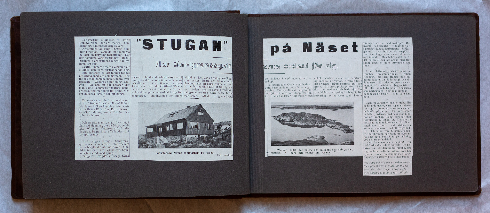
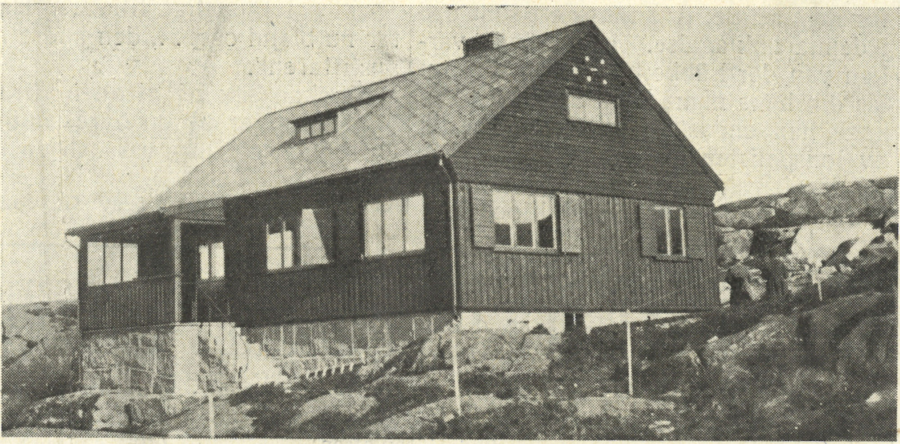
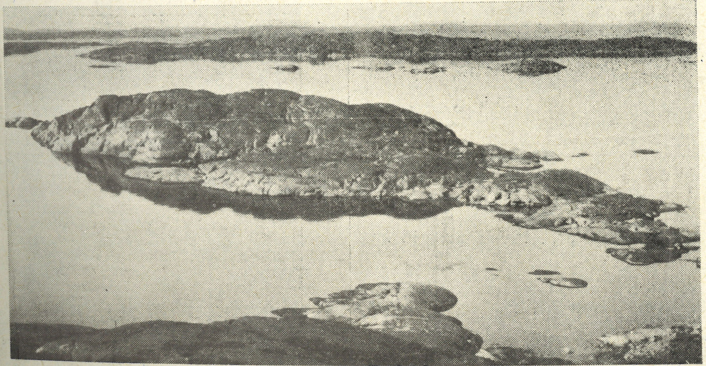

Uppslag 10
{kind=link}


Sahlgrenska sjukhuset är stort! Sjuksystrarna där äro många! Om kring 300 sköterskor och elever! Arbetstiden är lång. Sextio tim mar i veckan. Men de 60 timmarna betyder en betydlig förbättring. Det har nämligen varit 80 timmar. Redu ceringen i arbetstidens längd har ny ligen ägt rum. Sextio timmars arbete i veckan å ett sjukhus kan vara ansträngande nog. Inte underligt då, att tanken föddes att ordna ett sommarhem. För tre år sedan började man fundera över projektet. Genom en jultidning ”Stu gan” 1931 och ett par basarer, där man sålde Sahlgrensystrarnas hand arbeten, fick man ihop till grund. Och det huvudsakligaste för ett bygga.
En styrelse har haft att ordna om Så att ”Stugan” skulle bli verklighet. Där fanns fröken Henning samt syst rarna Britta Källström, Karin Olsson, Ann-Sofi Manne, Anna Forsén och Ebba Andersson.
Och så satt man igång. Fick tag i plats vid Hammar, ute på Näset. Arki tekt Wilhelm Mattson utförde rit ningarna. Byggmästare Tellander stod för uppförandet.
Nu är stugan färdig. Sahlgrens systrarnas sommarhem står vackert på en bergknalle ute vid havet. Om rådet är stort. C:a 17, 000 kvm. Sten mark broderad med ljung. ”Stugan” invigdes i tisdags förra
veckan. Hundratals Sahlgrenssystrar i sina ljusa sköterskedräkter hade samlats där ute. Överläkarna, d:r Sven Johansson och d:r Gotthard Söder bergh hade också passat på för att se hur deras personal ordnat åt sig för sommaren. Tidningsmän och andra
inbjudna. Det var en väldig samling som syster Britta och fröken Inga Hemming hade att hälsa välkommen ut till landet, ut till havet, ut till fåglar ne. Solen sken så särskilt vackert. Sahlgrenssystrarna sökte också tävla med solen. Att de voro glada över,
att ha landställe på egen grund, var tydligt.
Så visades allt! Och vi som hade att göra husesyn fann det allt vara gott och bra. Den rymliga storstugan, där det bjöds på kaffe och dopp, var fun kis. I alla händelser fullt modern och enkel. Vackert målad och hemtrev ligt med tak i plywood. Överallt lyste det i vackra färger: rostrött, gult och grönt. Ett stort präktigt kök. Sär- skilt rum med skåp för badgrejor. En stor källare, nedsprängd i berget, för förvaring av matvaror o.d. I övre
våningen sovrum med sovkojer. Be kvämt och praktiskt ordnat för att samtidigt kunna härbergera 18 natt gäster. Fler blir det väl knappast, som kan ligga kvar under nätterna, omväxlande. Men behövs det, så är det en enkel sak att ordna med fler sängplatser, så stora utrymmen som finns.
I sitt hälsnings- och invigningstal frambar föreståndarinnan, fröken Henning, ett tack, främst till sjuk- husets läkare d:r Söderbergh och d:r Johansson för det intresse de visat bygget; till arkitekt och byggmästare; till alla som bidragit till att finansiera sommarhemmet. Som man hoppas- genom en ny basar- skall vara helt- betalt.
Men nu vänder vi blicken utåt. En bedårande utsikt, vare sig man place rat sig i storstugan, å verandan eller nedanför på berget. Där ute ligger - de blåa fjordarna, med dess gråa klip por och kobbar. Långt borta ser man konturerna av Vinga fyr. Där ute på böljorna dunkar kuttrarna, där glider segelbåtar fram. Vid stränderna kommer sommaren med ett livligt bad liv. Och en bit från ”Stugan”, nedan för bergbranten har Sahlgrenssytrar na sina egna badställen på omkring 200 meters strandvidd.
Vad kan man mera begära! Vi lyckönska dem till förvärvet! De be höva så väl den solbestrålning, det lugn och det salta havsstänk, som här bjudes. Som omväxling med långa dagar och nätter vid de sjukas bäddar.
När sund och vik här stranden spegla, Med pris åt dem vi villigt är tillfreds Men när tvärs stiltjen kårar segla Med solguld i, då är vi rätt tillfreds.

